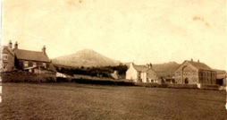

The carpenters workshop
Isallt was a single floored, small cottage (John Jones, the joiners’ workshop). He did jobs for local farmers and made the occasional coffin. One day he went with his apprentice to a nearby farm and asked his apprentice if he could press as hard as he could on the dead person’s knees. In doing so, the apprentice was horrified when he saw the body sitting upright in the coffin. He ran all the way home and was in a foul mood for days!
Dewi Williams, Brynmor remembers a small, one-floored house and Isgoed was built on its gable end. Aled Williams, Gorslwyd remembers a pile of stones by Matt’s garage, and he thinks that they were the remains of the workshop. Adam Hughes said that the workshop was near where Isgoed is today.
This photograph, taken circa 1910, shows Elin Jones, Cae Garw’s cottage, next door to the workshop of John Jones, the carpenter, opposite the chapel
John Jones, the carpenter was Arifog’s father, and Ellen Evans believed that this John Jones was the one that used to play pranks on his apprentice. Arifog was her Sunday school teacher, and he was selected to be the church secretary before he became a deacon, because it was unusual, in those days, to have someone who could write and was good with numbers. He was in the job for fifty years. John Jones did jobs for local farmers and made the occasional coffin. One day, the carpenter, who liked a good joke, went with his apprentice to a nearby farm and asked his apprentice if he could press as hard as he could on the dead person’s knees. In doing so, the apprentice was horrified when he saw the body sitting upright in the coffin. He ran all the way home and was in a foul mood for days! This story is told by Ellen Evans, Alpha, though she doesn’t name the carpenter.